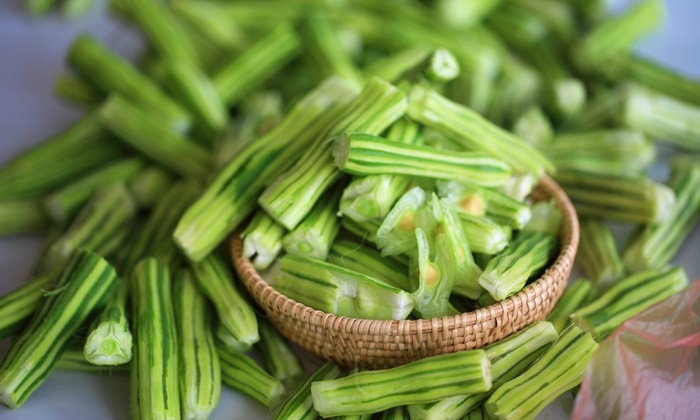

มะรุม
พืชสมุนไพรสุดแสนมหัศจรรย์ เพราะนอกจากจะนำมาปรุงอาหารรับประทานแล้วได้รับสารอาหารอย่างวิตามินเอ วิตามินซี แคลเซียม โพแทสเซียม ใยอาหาร แล้ว มะรุม ยังเป็นยาวิเศษรักษาที่ทุกส่วนสามารถใช้รักษาได้สารพัดโรค
เริ่มจาก "ราก" ที่จะช่วยบำรุงไฟธาตุ แก้อาการบวม "เปลือก" ใช้ประคบแก้โรคปวดหลัง ปวดข้อ รับประทานเป็นยาขับลมในลำไส้ "กระพี้" ใช้แก้ไขสันนิบาด "ใบ" มีแคลเซียม วิตามินซี และสารต้านอนุมูลอิสระสูงมาก ใช้แก้เลือดออกตามไรฟัน แก้อักเสบ มีฤทธิ์เป็นยาระบายอ่อน ๆ "ดอก" ช่วยบำรุงร่างกาย ขับปัสสาวะ ขับน้ำตา ใช้ต้มทำน้ำชาดื่มช่วยให้นอนหลับสบาย"ฝัก" ใช้แก้ไข้หัวลม "เมล็ด" นำมาสกัดเป็นน้ำมันใช้รักษาโรคปวดข้อ โรคเกาท์ รักษาโรคผิวหนังจากเชื้อรา และ "เนื้อในเมล็ดมะรุม" ใช้แก้ไอได้ดี รวมทั้งยังเพิ่มภูมิต้านทานให้ร่างกายได้ด้วย หากรับประทานเป็นประจำ แต่สำหรับคนที่เป็นโรคเลือด G6PD ไม่ควรรับประทานมะรุม
ไถพรวนดิน และตากดินประมาณ 7-15 วัน ขุดหลุมขนาดกว้าง x ยาว x ลึก ประมาณ 50x50x50 เซนติเมตร ใส่ปุ๋ยคอก หรือปุ๋ยหมัก คลุกเคล้าให้เข้ากับดิน
การเตรียมพันธุ์ ควรเลือกกิ่งชำ และเมล็ดที่มีความสมบูรณ์ ปราศจากโรคและแมลง สามารถทำได้ 2 วิธี คือ
การปลูกเพื่อการเก็บเกี่ยวใบ ใช้ระยะระหว่างต้น 1 เมตร และระยะระหว่างแถว 1 เมตร และปลูกเพื่อการเก็บเกี่ยวเมล็ด ใช้ระยะปลูก 4x4 เมตร
การให้น้ำ ถ้าเป็นระยะแรกของการปลูก หรือปลูกในฤดูฝนจะไม่มีปัญหาเรื่องการให้น้ำ แต่ในฤดูแล้งควรมีการให้น้ำเช้า และ เย็น หรือใช้ระบบน้ำหยด จะทำให้ฝักมีขนาดที่โตและยาวมากขึ้น
การใส่ปุ๋ย ควรใส่ปุ๋ยคอกหรือปุ๋ยหมัก โดยใส่รอบๆ โคนต้น หลังจากนั้นพรวนดินกลบ
การกำจัดวัชพืช ระยะเริ่มปลูก เป็นช่วงที่สำคัญ ควรถางหญ้าบริเวณโคนแล้วนำมากลบโคนต้น รักษาความชื้นในดินและเพิ่มธาตุอาหารให้แก่มะรุมอีกด้วย
ราก มีรสเผ็ด หวาน ขม แก้อาการบวม บำรุงไฟธาตุ เปลือกจากลำต้นมีรสร้อน นำมาสับให้เป็นชิ้นเล็กๆ ใส่ผ้าห่อทำเป็นลูกประคบนึ่งให้ร้อนนำมาใช้ประคบแก้โรคปวดหลัง ปวดตามข้อได้เป็นอย่างดี รับประทานเป็นยาขับลมในลำไส้ ทำให้ผายหรือเรอ คุมธาตุอ่อนๆ (ตัดต้นลมดีมาก) แพทย์ตามชนบท จะใช้เปลือกมะรุมสดๆ ตำบุบพอแตก อมไว้ข้างแก้ม เมื่อรับประทานสุราจะไม่รู้สึกเมา กระพี้ แก้ไข้สันนิบาตเพื่อลม
ใบ
ดอก ช่วยบำรุงร่างกาย ขับปัสสาวะ ขับน้ำตา ใช้ต้มทำน้ำชาดื่มช่วยให้นอนหลับสบาย ฝักรสหวาน แก้ไข้หรือลดไข้
เมล็ด นำเมล็ดมะรุมมาสกัดน้ำมันสามารถใช้ทำอาหาร รักษาโรคปวดตามข้อ โรคข้อเสื่อม รักษาโรครูมาติซั่ม และรักษาโรคผิวหนัง แก้ผิวแห้ง ใช้แทนยารักษาผิวใช้ชุ่มชื้น รักษาโรคอันเกิดจากเชื้อรา เนื้อในเมล็ดมะรุม ใช้แก้ไอได้ดี การรับประทานเนื้อในเมล็ด เป็นประจำสามารถเพิ่มภูมิต้านทานให้ร่างกายได้
นำใบมะรุมที่อบแห้งสนิทบรรจุถุงพลาสติกใส และปิดปากให้สนิท เขียนฉลากปิดถุงให้เรียบร้อย น้าเข้ามาจัดเก็บในห้องที่สะอาด เย็น ไม่อับชื้น มีอากาศถ่ายเทดี ป้องกันไม่ให้กระทบแสงแดด
หมั่นคอยดูแลและระวังไม่ให้มีเชื้อราหรือแมลงเข้าไปท้าให้คุณภาพมะรุมแห้งลดลง